Goal: add interval video recording to DJI Osmo Action 4 for everyday vlogs. An Android app starts and stops clips on a schedule; DJI Mimo handles detailed media review and export. Reproduce the screens, interactions, connection flows and on-device debugging process.
This guide describes Luma 0.7.1, named 留光 in Chinese, with package local.intervalvlog. The website provides the matching test APK, native UI renders and screen diagrams. The home screen starts with the camera connection area. Language options are Chinese, English and system default.
01 · Instructions for your Agent
Place this guide, the screen references and your device details in one working directory. Ask your Agent to read them before implementation. The downloadable Agent brief includes this guide in full.
- Treat device requirements, features, page order, parameter ranges and acceptance checks as the implementation specification. Follow the screenshots for layout and copy.
- Deliver an installable APK, build commands, test evidence and the next stage's inputs after each stage. When a feature fails, reproduce it, collect logs, identify the failing layer, then change the implementation.
- Operate the phone in this loop: confirm the foreground app, inspect the current controls or screenshot, act on one target, inspect the result. Locate controls again after recreation, rotation or a dialog.
- The Agent builds, installs, launches, observes and tests. The device owner confirms USB debugging authorization, system permissions, camera pairing and device unlocking.
- Verify recording on the real camera. Connected, stopped and parameter-updated states must come from the actual connection, camera state and readback.
- Implement core control and scheduling first, then preview, parameters, the album and appearance. Observation and interval capture use mutually exclusive ownership in this version.
Device input template:
Computer OS:
Working directory:
Development Agent and available tools:
Phone model / Android version:
Selected serial from adb devices:
Exact camera model / firmware version:
Camera mode / SD card state:
UI references: attached screen images02 · Screens and interactions
There are two Activities. MainActivity hosts four bottom-navigation pages. ObserveActivity hosts three tabs and a fullscreen preview. These form eight primary display states, plus a 4:3 variant, light theme and dialogs.
| Area | Screen | Entry | Responsibilities |
|---|---|---|---|
| Main 1 | Capture | Default / first bottom tab | Scan, pair, configure a plan, test, start and stop |
| Main 2 | Camera | Second bottom tab | Modes, photo, manual video, device state, viewfinder entry |
| Main 3 | Activity | Third bottom tab | Chronological events, copy logs, confirm before clearing |
| Main 4 | Settings | Fourth bottom tab | Language, theme, battery settings, disconnect, labs, version and licenses |
| Observation 1 | Live | Camera → viewfinder | Wi-Fi, aspect ratio, framing, reference frame, zoom |
| Observation 2 | Parameters | Viewfinder → Parameters | Read values, select options, write and verify |
| Observation 3 | Album | Viewfinder → Album | Paged files, thumbnails, photo and video preview |
| Observation state | Fullscreen | Live → fullscreen | Landscape, floating tools, zoom and return |
Native 0.7.1 UI references
These native UI renders show layout with the camera disconnected; capture and album retrieval were not running during rendering. Open an image for its full size. The Activity page uses the illustrative diagrams below.


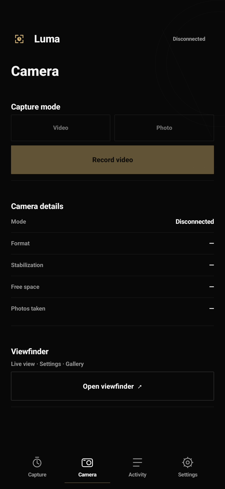

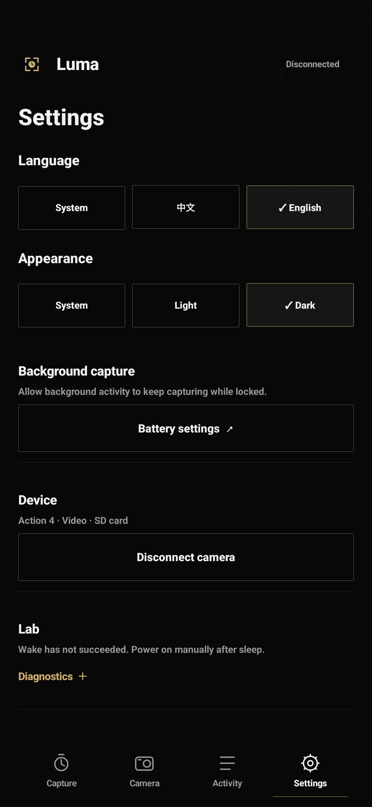

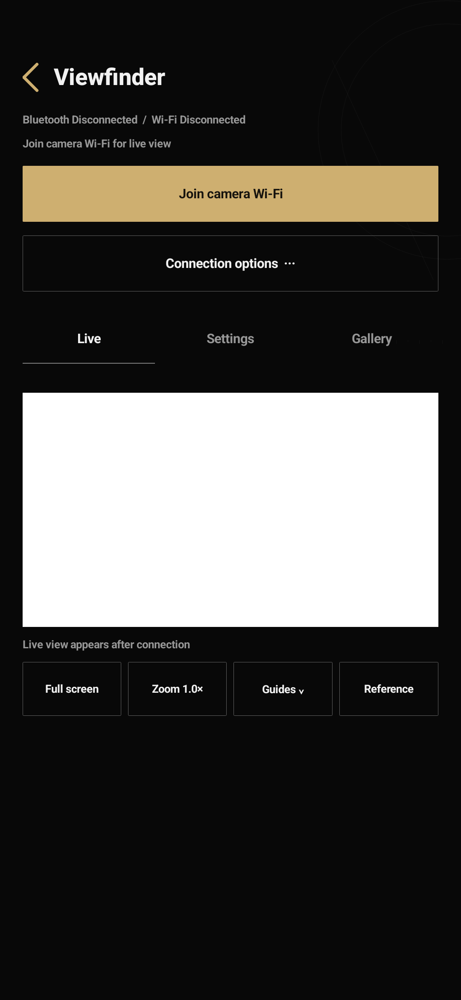

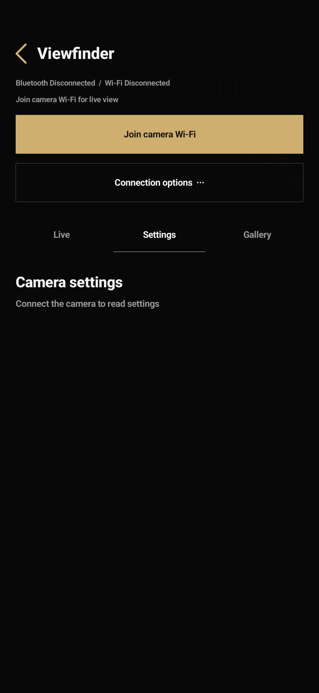

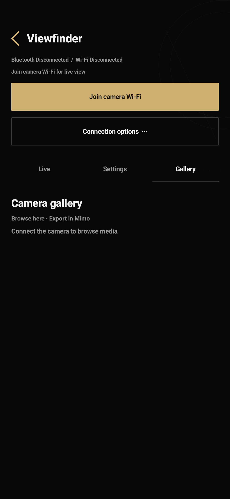

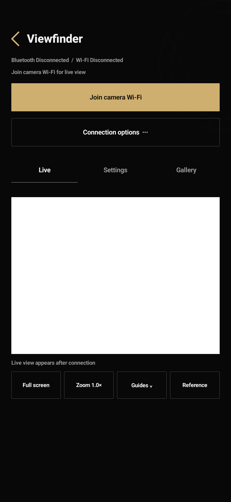

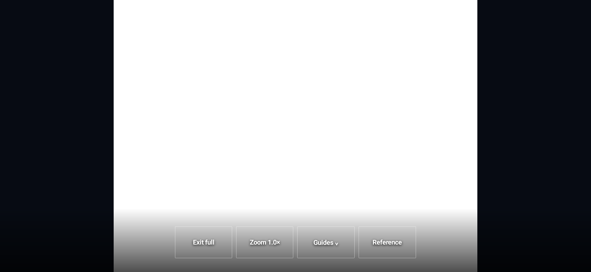
Structure diagrams
The kit contains 18 illustrative diagrams, nine states in two themes. Their labels are in Chinese; use the English native renders and this specification for English copy.

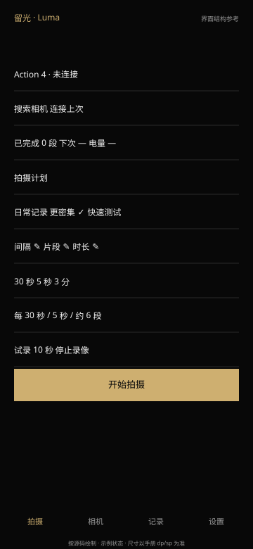

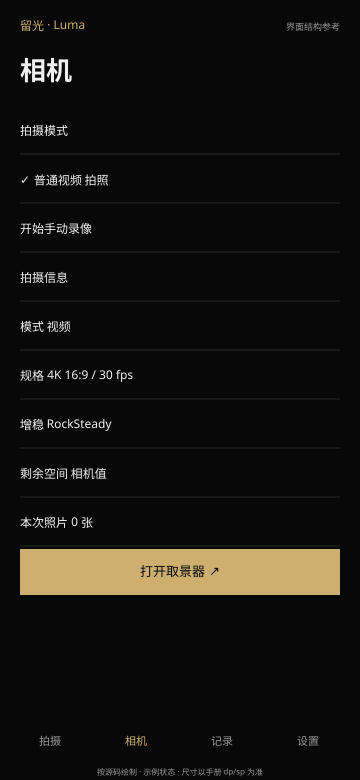

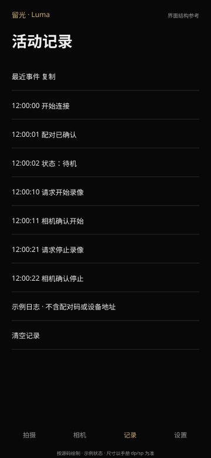

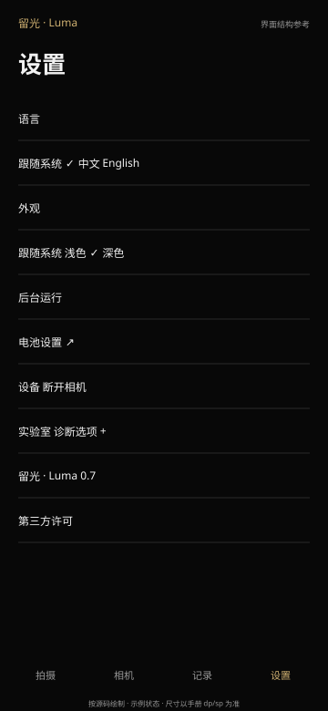

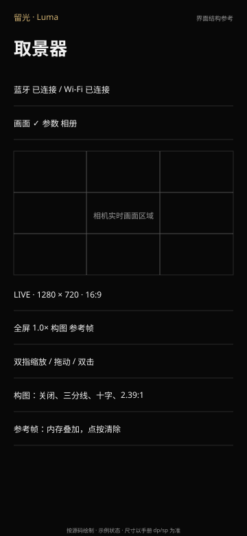

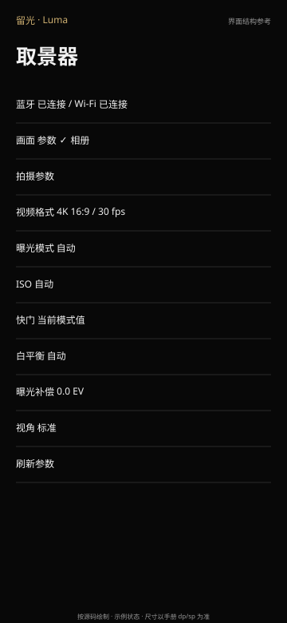

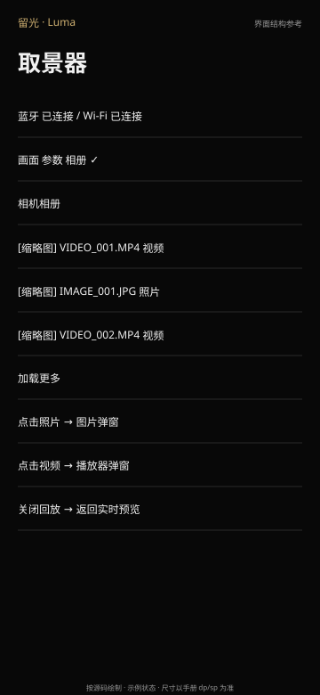

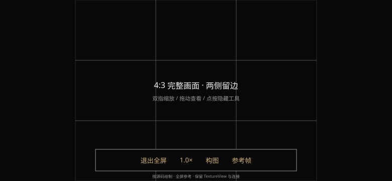
Capture
Top to bottom: brand and connection status; Action 4 illustration, device name, state and explicit expand/collapse button; scan, reconnect and discovered devices; completed clips, next-clip countdown and camera battery; capture-plan heading and three presets; editable interval, clip length and duration; summary; 10-second test and stop-recording controls; fixed primary action above four bottom tabs. The camera area follows the app header directly.
Presets are Everyday (300 seconds / 10 seconds / 120 minutes), Frequent (180 / 10 / 120) and Quick test (30 / 5 / 3). Selecting one updates all three inputs, saves a draft and shows a checkmark and text feedback. Numbers have an edit indicator. Select the old value when editing and dismiss the keyboard on submission.
The main button reflects capture, stop-task or stop-recording state. Lock plan inputs and mode changes during a task or pending start/stop confirmation. Increment completed clips only after the camera confirms the clip has ended. Connection details have a visible collapse control.
Camera
Video and photo modes are mutually exclusive and visibly selected. Wait for actual camera mode after requesting a switch, then update the shutter action: manual start/stop in video mode, one photo in photo mode. Manual video has no inherited 10-second deadline.
Use aligned label/value rows for mode, resolution/frame rate, stabilization, remaining storage and session photo count. Place viewfinder entry below them. Entry requires fresh camera state, standby, and no task or individual capture owning the camera.
Activity
Show Activity, Recent events, a copy button and selectable monospaced logs. Include time, action, acknowledgment or error. Copy the service log when bound, otherwise the persisted event text. Clearing requires confirmation and clears app logs only.
Keep about 10–12 KB in history/events. Translate user-facing event descriptions while retaining stable protocol identifiers and numeric diagnostics.
Settings
Order: language (system / Chinese / English), appearance (system / light / dark), background operation and battery settings, device/disconnect, collapsed labs for wake/sleep diagnostics, app version and licenses.
Save the plan draft before theme recreation. Use Android LocaleManager for app language; preserve the Settings page, draft and selections. Labs starts collapsed and sleep diagnostics require confirmation. Daily capture does not invoke sleep.
Shared viewfinder controls
Provide back/title, independent Bluetooth and Wi-Fi states, connection progress/errors, connect-Wi-Fi action, an advanced menu, and Live/Parameters/Album tabs. Collapse connection controls after success. Advanced options include BLE-only parameters and refreshing Wi-Fi credentials.
Live and fullscreen
Keep one persistent TextureView. Fit the entire image inside its container. Show LIVE, actual decoded dimensions and display ratio, then fullscreen, zoom, composition and reference-frame tools. Pinch from 1× to 4×, pan when zoomed, and double-tap between 1× and 2×. The zoom button also toggles 1×/2×.
Composition options: off, thirds, center cross and 2.39:1 mask. Capture the current preview in memory as a translucent reference overlay; the action then clears the reference. Reset zoom, pan and reference when aspect ratio changes.
Fullscreen requests landscape and hides system bars. Tools float at the bottom; tapping the image toggles them. Back exits fullscreen before leaving the Activity. Preserve the Activity, TextureView, output Surface and network session during rotation; adjust containers and tool placement.
Parameters
Seven rows: video format, exposure mode, ISO, shutter, white balance, exposure compensation and field of view, followed by refresh. Display actual readback and disable unsupported entries for the current mode. Show available options in dialogs; handle camera rejection and refresh the actual value.
Formats: 4K / 2.7K / 1080P in 16:9, and 4K / 2.7K in 4:3. Frame-rate options: 24, 25, 30, 48, 50, 60 fps. Exposure: auto/manual. ISO: 100–6400. Shutter: 1/25, 1/50, 1/60, 1/100, 1/120, 1/200, 1/250, 1/500, 1/1000, 1/2000. White balance: auto or listed 3000–7500 K options. Compensation: −2, −1, 0, +1, +2 EV. FOV: ultra-wide, wide, standard and natural wide. Treat these as UI options; test valid combinations on hardware and show original errors when rejected.
Album and dialogs
Read paged camera media, thumbnails, file details and load-more. A photo opens an image preview. For video, try the low-bitrate .LRF proxy first, then the original MP4; provide playback controls and stop playback on dismissal. Wait for camera playback to end before restoring live view.
Other dialogs: parameter options, composition, clear-log confirmation, labs sleep confirmation and licenses. Use Mimo for detailed download/export workflows.
03 · Visual specification
Dark: background #080808, text #F1F1F1, secondary #969696, gold #CEAF70, dividers #292929. Light: background #FAFAFA, text #161616, secondary #686868, accent #87672C, dividers #E1E1E1. Default is dark, with light and system options.
| Element | Specification |
|---|---|
| Content margin | 20 dp, consistent left/right alignment |
| Header | 68 dp; icon 30 dp; brand 21 sp |
| Page heading | 28 sp, sans-serif-medium |
| Body / supporting copy | 12–14 sp / 10–12 sp |
| Plan numbers | 36 sp, sans-serif-light, tabular numerals |
| Primary action | 52 dp high; gold with dark text in dark mode; above bottom bar |
| Secondary action | Usually 48 dp; fine outline and ripple |
| Bottom navigation | 68 dp; icons about 23 dp, labels 11 sp |
| Selection | Checkmarks, border and explicit selected state |
| Surfaces | Solid colors, fine separators, near-square corners, line-art camera |
Use dp/sp and handle system insets, keyboard and text wrapping. Fullscreen is a dedicated landscape layout.
04 · Stack and module boundaries
| Module | Implementation | Responsibility |
|---|---|---|
| MainActivity | Java / native Android Views | Four pages, inputs, draft, service binding and rendering |
| CameraService | Foreground Service / Binder / Handler | Single capture-state source, BLE, scheduler, notifications, wake lock |
| Protocol / Advertisement | Plain Java | R SDK framing/parsing and advertisement candidates |
| ObserveActivity / MimoLink / Duml | Java / BLE / native networking | Observation, Wi-Fi provisioning and DUML settings |
| LiveBackend / DumlTransport | Kotlin | UDP session, heartbeat, reliable window, video assembly |
| MediaBackend | Kotlin / shared transport | Album, media access and playback handoff |
| PreviewDecoder | MediaCodec / HEVC | H.265 decode, dimensions, crop and pixel aspect ratio |
| PreviewViewport / PreviewGeometry | TextureView / Canvas / Java | Contain geometry, fullscreen, gestures, composition, reference |
| Visual | Drawable / Canvas | Palette, states and line icons |
| I18n | Android resources / LocaleManager | App name, strings, notifications and language switching |
Package local.intervalvlog, minimum Android 13 / API 33, target API 35. Export .MainActivity; keep the service and observation Activity unexported. Languages share the same package.
The local build uses Corretto JDK 21, Android API 35, build-tools 35.0.0, Kotlin 2.1.21 and D8/R8 8.10.21. Pipeline: javac/kotlinc → D8 → aapt2 → zipalign → apksigner, without Gradle. An Agent may choose a standard Android build project while meeting the same package, permission, screen and acceptance requirements. Resolve tool paths on the viewer's machine.
Permissions: nearby-device scan/connect, experimental advertising, notifications, INTERNET, network state, Wi-Fi state/change, NEARBY_WIFI_DEVICES, foreground service and connectedDevice type, WAKE_LOCK and battery-optimization exemption request. BLE scanning declares neverForLocation. The app controls an external camera and does not use the phone camera. Retain Android permission and Wi-Fi confirmation dialogs.
API references: ADB, Bluetooth permissions, connectedDevice service.
05 · Prepare the computer and phone
Original validation: Mac, Samsung S25 FE SM-S731B/DS, Android 17 / One UI 9, and Action 4. Record your own device and firmware versions.
- Install Codex or an Agent with terminal, file and device tools. Give it a dedicated project directory.
- Install Android Platform Tools, JDK, Android SDK, build-tools and the chosen Kotlin/build tools. Check adb and Java versions.
- On Samsung: Settings → About phone → Software information → tap Build number seven times; enable Developer options → USB debugging.
- Connect a data cable and authorize the computer on the phone. Select one serial and use -s for every command when multiple devices are present.
- Turn on the camera, insert a writable SD card, select normal video standby and exit Webcam. Complete official Mimo activation, then close Mimo.
- Create README, spec, decisions and evidence directories for the specification, choices and stage logs.
adb version
java -version
adb devices -l
adb -s YOUR_PHONE_SERIAL shell getprop ro.product.model
adb -s YOUR_PHONE_SERIAL shell getprop ro.build.version.release
adb -s YOUR_PHONE_SERIAL shell wm sizedevice means ready for debugging. unauthorized needs phone confirmation. For offline, reconnect the cable and check USB mode. An empty list calls for checking the data cable. Keep serials in local records.
06 · Operate and monitor the phone
Install, wake and launch
Fill in APK_PATH and YOUR_PHONE_SERIAL from the actual build and device.
adb -s YOUR_PHONE_SERIAL install -r APK_PATH
adb -s YOUR_PHONE_SERIAL shell input keyevent KEYCODE_WAKEUP
adb -s YOUR_PHONE_SERIAL shell am start -W -n local.intervalvlog/.MainActivity
adb -s YOUR_PHONE_SERIAL shell dumpsys window windows-W waits for launch. Verify that the focused window belongs to this app. Ask the owner to unlock a secured screen. Use install -r to preserve pairing and drafts. On signature mismatch, report it and choose a separate package or obtain permission before removing the existing installation/data.
Inspect before acting
Use the configured phone tool, UIAutomator or development ADB commands for this app. Refresh the control tree after recreation. Derive tap coordinates from current screenshots or bounds.
adb -s YOUR_PHONE_SERIAL shell uiautomator dump /sdcard/interval-window.xml
adb -s YOUR_PHONE_SERIAL pull /sdcard/interval-window.xml evidence/window.xml
adb -s YOUR_PHONE_SERIAL shell screencap -p /sdcard/interval-screen.png
adb -s YOUR_PHONE_SERIAL pull /sdcard/interval-screen.png evidence/screen.png
# X and Y come from the current target's bounds.
adb -s YOUR_PHONE_SERIAL shell input tap X Y
# Focus the numeric input and select/clear its old value first.
adb -s YOUR_PHONE_SERIAL shell input text 30
adb -s YOUR_PHONE_SERIAL shell input keyevent KEYCODE_BACKPrefer text, content-desc, accessibility role and resource-id. Use a screenshot for custom Canvas content and supply content descriptions for interactive controls. Resolve the current permission, Wi-Fi or pairing prompt, then inspect app state again.
Temporarily keep the screen on for foreground UI tests and remove that setting afterwards. Test long tasks with screen lock separately. Check whether the phone locked before diagnosing a black preview.
Logs and failure evidence
Capture logs from before an operation until its confirmed outcome. pidof may return empty if the process is absent; check before passing --pid. Obtain a new PID after a crash/restart.
adb -s YOUR_PHONE_SERIAL shell pidof local.intervalvlog
# Substitute a single valid PID from the preceding command.
adb -s YOUR_PHONE_SERIAL logcat --pid=APP_PID -v threadtime
adb -s YOUR_PHONE_SERIAL logcat -s IntervalVlog:I '*:S'
adb -s YOUR_PHONE_SERIAL shell dumpsys activity services local.intervalvlog
adb -s YOUR_PHONE_SERIAL shell dumpsys powerFor video, distinguish four layers: acquired network, complete video units, decoded frames and pixels actually displayed on the Surface. Record UDP receipt, decoder progress and display independently.
A debugging record includes build version, camera mode, initial state, controls/screenshot, request sequence, ACK/state, result and recovery. Keep SSID passwords, pairing identities and private footage local.
07 · Bluetooth protocol and readiness
Start with the R SDK in DJI's official Osmo-GPS-Controller-Demo. Supporting references: Osmosis and Osmo Client. Check upstream versions and licenses when porting.
- Service FFF0, notify characteristic FFF4, write characteristic FFF5, expanded to standard Bluetooth UUIDs.
- Discover services, enable notifications and CCCD, then send pairing frames. Fragment writes at negotiated MTU minus 3 and serialize them through write callbacks.
- Identify candidates by DJI manufacturer advertisement data. Names are display labels. Validate type 0xFF33 in pairing response for this Action 4 implementation; custom camera names do not affect model validation.
- Generate and persist a stable controller identity per installation and reuse it. Show pairing verification; the owner confirms on the camera. Stop on rejection and subscribe to state after success.
- R SDK frames start with AA and contain length, type, sequence, header CRC16, command set/ID, payload and trailing CRC32. Handle fragments, combined frames, corrupted data and resynchronization.
| Command | Purpose | Evidence |
|---|---|---|
| 00/19 | Pair | Pairing event, owner confirmation, device type |
| 1D/05 | Subscribe | Periodic 1D/02 state |
| 1D/03 | Start/stop or photo | Matching ACK plus capture state |
| 1D/04 | Mode switch | ACK plus subsequent mode |
Local start/stop payload: 9 bytes; first four are little-endian 0xFF33, fifth is 0 for start or 1 for stop, remaining bytes reserved. Video mode is 1, photo mode 5, recording state 3, standby 0 or 1. Subscribe immediately after pairing for mode, recording state, format, frame rate, stabilization, space and battery.
GATT connected, paired and fresh state are distinct. Fresh means ready, awake and last camera status less than 5 seconds old. Starting a task or changing configuration requires fresh standby.
Service states include running, pendingStart, owned, pendingStop, stopAck, pendingPhoto, pendingMode, auxiliaryActive and sleeping. Bind the UI to these states rather than maintaining an independent apparent-recording timer.
08 · Scheduler state machine
Interval means start-to-start. Request the first clip immediately, then advance along the planned timeline. Skip missed targets after a busy/disconnected period instead of burst-catching-up.
Standby → pendingStart → camera recording confirmed (owned)
→ recordUntil → pendingStop
→ matching stop ACK + standby → completed +1
→ wait for next target / finish at total duration| Item | Rule |
|---|---|
| Interval | 30–3600 seconds |
| Clip | 1–60 seconds |
| Duration | 1–720 minutes |
| Headroom | Interval at least 10 seconds longer than clip |
| Clock | SystemClock.elapsedRealtime; tick about 250 ms |
| Clip deadline | clipMs after confirmed recording state |
| Test clip | Independent 10-second deadline, checked even when running=false |
| Manual video | recordUntil=Long.MAX_VALUE until user stops |
| Stop confirmation | Matching sequence, successful ACK, camera standby |
| Stop retry | Ready and still pending after 5 seconds: resend stop |
| Transition timeout | Start 10 seconds, mode 8 seconds, photo 15 seconds |
| Reconnect | About every 10 seconds while a task/transition is active |
| End task | Duration reached, user stop, abnormal temperature or battery ≤5%; handle any active clip |
Use a connectedDevice foreground service, persistent notification and PARTIAL_WAKE_LOCK. Notification actions open the app and stop the task. Check battery exemption before starting and apply phone-specific background settings. START_NOT_STICKY means process termination does not resume the old schedule.
Count photos after accepted request → observed shooting state → standby, rather than ACK alone. Tasks, individual capture, configuration and observation share ownership.
09 · Wi-Fi, preview and album handoff
First connection and reconnect
First obtain camera SSID/password via auxiliary Mimo BLE pairing, then request its network with WifiNetworkSpecifier. After system confirmation, bind the app's network requests to the camera network; the local AP is 192.168.2.1. Do not require INTERNET capability on that network request. The app still needs INTERNET permission for local sockets.
Cache credentials against camera identity in private preferences. Reuse credentials for normal reconnection while retaining capture R SDK BLE; refresh them from the advanced menu when changed. Close auxiliary provisioning BLE after Wi-Fi takeover and restore capture BLE if needed. Show each link separately.
On leaving observation, release network binding/request and its observation session. Use generation/lease ownership to prevent delayed cleanup from an old page disrupting a new connection. Keep existing capture BLE. BLE and Wi-Fi can coexist; task/observation exclusivity is an app control policy.
UDP video
Use a registered DUML/UDP session with heartbeats and acknowledgment windows. This camera uses UDP 9004, with TCP 7001 involved in registration/pairing. Assemble complete video access units, queue them with a bounded capacity, decode H.265 using MediaCodec in the background and render to Surface.
Keep at most 256 reliable-control outbox entries. Resend unacknowledged packets with the original sequence after about 300 ms. Maintain camera-accepted cursors separately for control, video and downloads. Send ACKs continuously in the receive loop on roughly a 25 ms budget so blocked reads do not stall the video window. Test wraparound and unknown ACKs.
Aspect ratio
Action 4 may send a 1280×720 HEVC preview carrier for both 16:9 and 4:3 recording formats. Read recording format first: resolution codes 95 and 103 indicate 4:3; 10, 16 and 45 indicate 16:9. Reuse BLE state; when unavailable, read 02/19 over Wi-Fi about every 2.5 seconds. Unknown formats fall back to decoder dimensions, crop and SAR.
Use contain geometry with letterboxing. Constrain pan by image and viewport dimensions. Update ratio and clear references after format changes. Preview zoom is separate from camera FOV.
Parameters and media
Video format read/write: 02/19 and 02/18; exposure: 02/1F and 02/1E; ISO: 02/2B and 02/2A; shutter: 02/29 and 02/28; white balance: 02/2D and 02/2C; compensation: 02/2F and 02/2E; FOV uses 02/8E. Read → user selection → write ACK → short wait → readback comparison → refresh.
LiveBackend and MediaBackend hand off the same registered transport. Stop the old reader first; two sockets must not compete for one logical session. Release playback presence and wait for the 02/80 playback flag to clear before resuming live view. Limit HTTP media paths to required camera locations such as DCIM/MISC, with bounded reads and allocations.
10 · Staged implementation prompts
A · Environment and UI
Inventory the environment and create a reproducible build, package and permission list. Implement four main pages and three observation tabs from the references, with real disconnected state. Install and inspect inputs, navigation, insets and themes. Deliver screenshots, build commands and a page inventory before Bluetooth work.B · BLE and individual capture
Read the official DJI R SDK demo. Implement advertisement identification, service discovery, notifications, serial fragmented writes, pairing, type validation and state subscription, including custom names. Reach fresh standby, then implement 10-second test video, manual video and one photo. Record requests, sequences, ACKs, state and SD-card results. Verify timed stopping and manual continuous recording separately.C · Scheduling and background
Centralize capture state in CameraService. Implement chapter 08 with validation, notifications, battery prerequisites, stop retries and timeouts. Start with the 30/5/3 plan and verify every clip. Repeat with screen lock and background operation. Save evidence before adding observation.D · Wi-Fi and supporting features
Enter observation from the actual BLE-connected homepage path. Implement first-time Wi-Fi provisioning and cached reconnect with separate link states. Check network, video units, decoding and display separately. Add parameters with ACK/readback, read-only album, photo/video dialogs and return to live. Restore camera parameters modified by tests.E · Ratio, fullscreen and appearance
Use recording format plus decoded dimensions to determine display ratio; test 16:9 and 4:3. Preserve TextureView, Surface and connection in landscape. Add zoom/pan, composition and reference frames. Apply the black/gold design to all pages, then test themes, languages and selection feedback.F · Delivery
Run logic, UI instrumentation and real-camera observation checks. Record APK version and SHA-256. Deliver build/install/pairing instructions, acceptance results and licenses. Put failures, causes and fixes in decisions/evidence so another Agent can continue.11 · Troubleshooting from this project
| Symptom | Observed cause/evidence | Implementation | Regression check |
|---|---|---|---|
| Only Webcam after removing SD | USB video input differs from SD recording control | Phone app; camera in video standby with SD | Phone starts/stops without computer-camera USB |
| Downloadable firmware could not be modified successfully | Encryption/signing; no complete accepted custom-firmware path | Use verified wireless control | Real recording without flashing |
| Renamed camera missed by scan | Fixed-name matching | Manufacturer data then pairing type validation | Default/custom/unnamed/unrelated candidates |
| 10-second test never stopped | Stop logic depended on running, which test capture did not set | Check owned deadlines independently | Test stops; manual video continues |
| App said stopped but camera recorded | Request/countdown was mistaken for confirmation | Match stop ACK and standby | Correct/wrong ACK, timeout, real camera stop |
| Scheduled iOS Mimo opening did not meet need | UI automation differs from stable background control | Native Android service/protocol | Background and locked-screen tasks |
| Wake advertisement succeeded but camera stayed dark | Advertising callback only confirmed phone request | Labs only; keep camera on | Camera screen/sound/fresh state |
| Wi-Fi returned 07/45 after BLE connection | Warm path reprovisioning timeout; cold path missed it | Camera-bound credential cache; temporary BLE handoff on first setup; bounded readiness-timeout retries | BLE → Wi-Fi → home twice |
| BLE disappeared after Wi-Fi | Provisioning/capture BLE roles or release order mixed | Close auxiliary link; retain/restore R SDK | Fresh BLE during preview and control after return |
| Album loaded but live view did not return | Playback presence, re-registration or competing readers | Shared transport; stop old reader; await playback exit | Photo/video → close → actual live decoding |
| Video stalled around 23 frames | Reliable window/ACK cursor stopped progressing | Original-sequence retries, three cursors, ongoing ACKs | Loss, reordering, unknown ACK, 16-bit wrap, sustained preview |
| 4:3 stretched | Preview carrier still 1280×720 | Use capture format; decoder fallback | 16:9/4:3 in normal/fullscreen; restore settings |
| Locked phone mistaken for decode failure | Data decoded but display conditions absent | Power/foreground monitoring; temporary KEEP_SCREEN_ON | Separate network/decoder/Surface/screen evidence |
| Fullscreen lost stream | UI recreation/reparenting replaced Surface | configChanges, persistent TextureView, move tools only | Stable session and growing frame count |
| Launcher logo black | Asset contrast and themed-icon behavior | Separate adaptive foreground/background/monochrome and notification icon | Render layers and check real launcher |
| Buttons looked like labels; selection unclear | Missing outline/feedback/entry | Fine outlines, ripple, preset checkmarks, edit and expand controls | Click presets/collapse and inspect values/state |
| Theme/language lost input/page | Recreation omitted draft/page restoration | SharedPreferences draft, instance page state, LocaleManager | Switch languages/system and retain Settings/draft |
| run-as: package not debuggable | Release private data inaccessible through run-as | Use app logcat/events/instrumentation; controlled export in dev build | Release still supports state/log/UI verification |
| Old screenshot after adb pull | Existing destination introduced a nested directory | New version/batch directory; check paths/times/build | Change a visible label and recapture |
Retain reproducible steps, the specific state/protocol fix and a rerunnable regression check for each issue.
12 · Build, checks and evidence
Use these module boundaries and entry points to organize implementation.
android/
AndroidManifest.xml
build.sh
src/local/intervalvlog/
MainActivity.java CameraService.java ObserveActivity.java
Protocol.java Advertisement.java MimoLink.java Duml.java
PreviewDecoder.java PreviewViewport.java PreviewGeometry.java
Visual.java I18n.java
TimingCheck.java UiCheck.java HandoffProbe.java
ObserveProbe.java PreviewCheck.java LocaleCheck.java
vendor/osmosis/
res/values/ res/values-zh/ res/values-night/ res/xml/
localization/
test/
THIRD_PARTY_LICENSE.txt
build/
evidence/
stage-01-environment.md
stage-02-ble.log
stage-03-interval.log
stage-04-wifi.log
checks/ screenshots/ decisions/Keep upstream licenses and document vendor changes. Manage local signing material separately from public artifacts. Implement and register the instrumentation entries before using these commands.
bash android/build.sh
adb -s YOUR_PHONE_SERIAL install -r android/build/interval-vlog-test.apk
adb -s YOUR_PHONE_SERIAL shell am instrument -w local.intervalvlog/.TimingCheck
adb -s YOUR_PHONE_SERIAL shell am instrument -w local.intervalvlog/.UiCheck
# Camera on, SD inserted, standby; phone unlocked; confirm system Wi-Fi prompt.
adb -s YOUR_PHONE_SERIAL shell am instrument -w local.intervalvlog/.HandoffProbe
adb -s YOUR_PHONE_SERIAL shell am instrument -w -e warm_start true local.intervalvlog/.ObserveProbe
adb -s YOUR_PHONE_SERIAL shell am instrument -w local.intervalvlog/.PreviewCheck
adb -s YOUR_PHONE_SERIAL shell am instrument -w local.intervalvlog/.LocaleCheck| Check | Required assertions |
|---|---|
| ProtocolTest / PreviewGeometryTest | Official CRC vectors, fragmented/corrupt frame recovery; contain, SAR, zoom bounds and format mapping |
| ReferenceCheck | Captured 6/45-item media samples; original-sequence retry, unknown ACK, wraparound |
| TimingCheck | Test stop deadline, manual duration, photo transition, observation/config ownership |
| UiCheck | Four main pages, three tabs, 4:3 and fullscreen, two themes: 18 states; real preset/expand interactions |
| HandoffProbe | Fresh homepage BLE; preview/return twice; fresh BLE during and after |
| ObserveProbe | Real video units/decode, parameter read/FOV restoration, album/thumbnails/photo/video, return to live |
| PreviewCheck | Confirm 16:9/4:3, ongoing rendering, landscape ratio, zoom/reference; restore original format in finally |
| LocaleCheck | Chinese/English/system, restored page/draft/selection, notification and brand localization |
Record native View.draw renders separately from physical screenshots. Layout renders do not establish that TextureView displayed camera frames; use pixel screenshots or actual display verification. Include build hash and test conditions. If the phone was locked and only landscape layout was checked, list physical-rotation verification separately.
13 · Acceptance checklist
- Four main pages, three observation tabs and fullscreen, matching ordering, selection, input and status behavior.
- Discover/connect a custom camera name and obtain fresh Action 4 standby after pairing.
- Stop test capture after about 10 seconds; keep manual recording independent; count photos after shooting/standby transition.
- Verify every start/stop in 30/5/3; end in standby after user stop or duration; match statistics to actual camera media.
- Record separate locked-screen/background tests; notification shows progress and can stop the task.
- Enter Wi-Fi from homepage BLE, retain state updates during preview and control after return.
- Correct 16:9/4:3 in normal/fullscreen, with continued rendering after rotation and return.
- Parameter writes have ACK/readback; restore all original parameters.
- Album pagination, photos and videos work; live view resumes.
- Theme/language retain draft/page; test normal and themed launcher icons.
- APK installs and pairs independently; daily operation has no development-computer dependency.
- Deliver build instructions, version, SHA-256, licenses, test conditions/results and troubleshooting evidence.
14 · Devices and operating conditions
The validated combination is DJI Osmo Action 4 and Samsung S25 FE. Minimum Android is 13. Current model validation rejects Action 5/6. Check other Android phones against this guide.
Keep the camera on with a writable SD card and Mimo closed. Auto power-off has a maximum of 30 minutes; phone-controlled wake is unresolved. Check power settings and the actual interval before a task. Observation and interval tasks are mutually exclusive. Process termination does not resume a plan. Test battery, temperature and connection for the intended duration.
Install 0.7.1 → camera in normal video standby → allow nearby devices and notifications → scan and confirm pairing → allow camera Wi-Fi prompt → configure background battery behavior → run a test clip and quick plan. Use official Mimo for first activation and detailed media export.